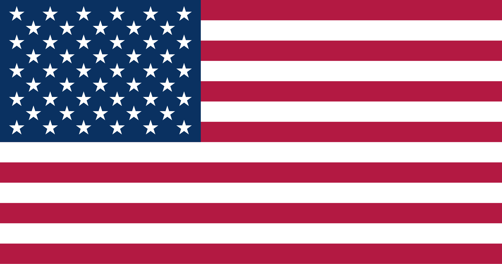
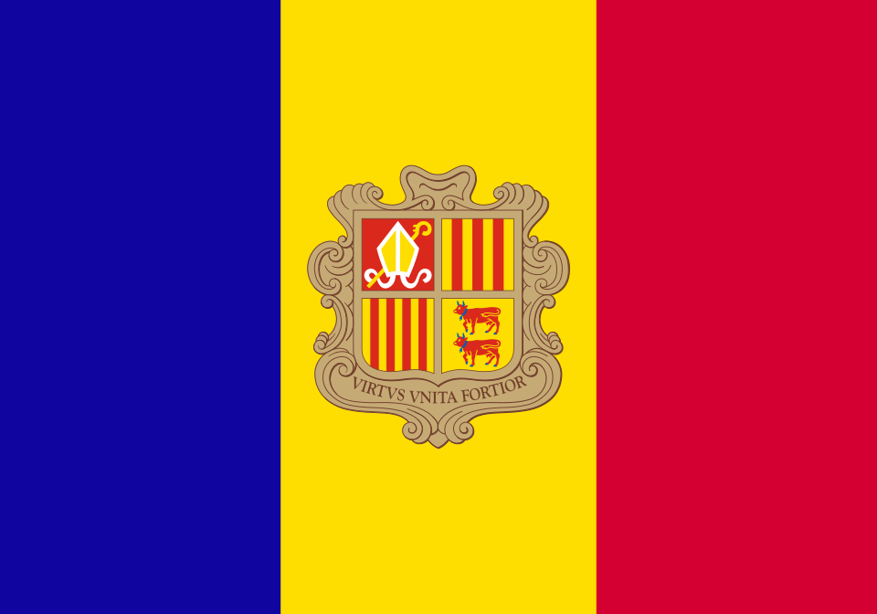

Argentina

Mi país. Tierra amplia y rica en paisajes, en cultura y con una cocina típica exquisita. En ciertos aspectos, tiene poco que envidiar a Europa.
Solo conozco 4 de las 23 provincias: Neuquén, Rio Negro, Chubut y Buenos Aires.
- Idioma: Español
- Moneda: Peso argentino
- Estadía: Toda mi vida
- Comida favorita: Empanadas y asado

Estados unidos
Gigante y variado, yo conocí la zona de la costa este. La gente es amigable, un poco en su burbuja, ajenos al resto del mundo, pero bien intencionados en general. Esta lleno de comodidades, ya sea en la casa, a la hora de comprar, servicios, etc. Cuentan con algunos inconvenientes como la falta de salud pública o la dificultad de trasladarse a cualquier lado a pie (todo esta muy espaciado). La falta de transporte público en algunos lugares también es un problema.
Todo es gigante y cómodo.
Los lugares más iconicos que conocí fueron Washington D.C, Nueva York y Ocean City.
- Idioma: Inglés
- Moneda: Dolar estadounidense
- Estadía: 5 meses
- Comida favorita: Barbacoa, rolls de canela

México
Otro país gigante y variado, del cual tuve la suerte de conocer una gran extension de él. Al estar ubicado más cerca del ecuador, es un país bastante cálido y tropical, lleno de playas blancas aguas cristalinas y selvas húmedas. Ciudades ricas en historia y llenas de cultura. La gente es super agradable, la vestimenta típica es colorida y vistosa. En general hay belleza hacia donde mires. Mi parte favorita fueron los cenotes.
Fan de la comida, pero mis tripas estuvieron irritadas todo el viaje. Además, hasta donde sé, excepto por la capital, el agua no es potable, por lo que hay que comprar agua embotellada constantemente.
Hice actividades hermosas como nadar con tortugas gigantes y manta-rayas, visitar ruinas mayas, bañarme en cenotes y volar en globo aerostático observando el amanecer. Puntos extras porque vi mi primera maravilla del mundo acá.
Los lugares más icónicos que conocí fueron Quintana Roo, Yucatán, Chiapas, Merida y Ciudad de México.
- Idioma: Español
- Moneda: Peso mexicano
- Estadía: 1 y 1/2 meses
- Comida favorita: Tacos y marquesitas

Colombia

Otro país super colorido y rico en cultura. Muy tropical y lleno de flores.
Hice un tour del café, crucé un barranco en un teleférico de metal durante una tormenta eléctrica y subí a la "Piedra del Peñol". No muy fan de su comida.
Dato de color: Cerca de Jardín hay una montaña que parece que hubiese sido dibujada por un niño.
Los lugares más icónicos que conocí fueron Medellín y Jardín.
- Idioma: Español
- Moneda: Peso colombiano
- Estadía: 1 mes
- Comida favorita: Coco rayado caramelizado
Chile

País vecino. Es un país largo longitudinalmente, pero muy angosto. No hay muchos kilómetros entre el océano Pacifico y su frontera con Argentina. No me gusto mucho la capital ya que es demasiado árida, pero dicen que el sur es precioso.
El lugar más icónico que conocí fue Santiago de Chile.
- Idioma: Español
- Moneda: Peso chileno
- Estadía: 2 días
- Comida favorita: -
Inglaterra

Pais muy muy rico. Con ciudades y edificios super viejos. Llueve bastante y casi siempre esta nublado, el clima es algo deprimente. En invierno anochece como a las 16hs.
Los lugares más icónicos que conocí fueron Londres, Oxford y Stonehenge.
- Idioma: Inglés
- Moneda: Libra esterlina
- Estadía: 9 meses
- Comida favorita: Sidras, hashbrowns, fish and chips
Escocia

Un país precioso, sobre todo la zona más nórdica. Lleno de construcciones viejas y castillos. Hay muchas tiendas de vestimenta típica. Me gustó mucho, parecía que estaba siempre dentro de algún cuento. Los escoceses pueden parecer algo cerrados, pero son amables siempre y cuando no seas Inglés. Me hizo acordar mucho a la Patagonia Argentina, aunque había algo que le daba un aire distinto. Los caminos son super angostos y de doble via, por lo que hay que conducir con mucho cuidado. Muy lluvioso y paisajes espectaculares. Ame las vacas Highland, o las "hairy coo" como le dicen ellos.
Los lugares más icónicos que conocí fueron Edinburgo, el Lagoness, Inverness y Glasgow.
- Idioma: Inglés
- Moneda: Libra escocesa
- Estadía: 5 días
- Comida favorita: Haggis
Francia
Si bien cuenta con edificios históricos y decorados muy al estilo europeos, ciertos lugares de Francia me hicieron acordar mucho a Buenos Aires, algunos incluso a Neuquén. Siempre creí que era una exageración que se llamara a Buenos Aires "El pequeño Paris", pero ahora veo el parecido.
Los franceses en el servicio son amables hasta ahi, los que conocí en persona fueron mucho más simpáticos. No les gusta hablar inglés, y generalmente no están contentos ni predispuestos a ayudar si les hablas en ese idioma, por lo que me tocó muchas veces comunicarme con señas y un pobre nivel de francés.
Puntos negativos porque me pusieron mi primera multa acá.
Se come mucho queso y vino. Muchos quesos tienen olores muy fuertes.
Los lugares más icónicos que conocí fueron Lilie y Toulouse. No conocí Paris (lol).
- Idioma: Francés
- Moneda: Euro
- Estadía: 2 meses
- Comida favorita: En general productos de panadería
Chechia

Anteriormente conocido como Republica Checa, este país fue una absoluta sorpresa para mi, ya que nunca fue mi intención ir, si no que más bien termine yendo por mala planificación (La idea original era ir a Alemania). Hermoso, lleno de calles empedradas, gente tocando música o cantando y edificios antigüos, muy limpio. Castillos impresionantes.
Los checos son bastantes fríos, aunque tal vez esa sea mi impresión sesgada porque simplemente no entiendo el idioma. A diferencia del español o el inglés, que puedo hablarlos, o el francés, el catalán y el italiano, que no los hablo pero al ser idiomas cercanos puedo llegar a entenderlos, en mis oídos, el checo suena completamente alienígena.
Dato de color: La marihuana es legal, y hay tiendas que la venden al público por todos lados.
El lugar más icónico que conocí fue Praga.
- Idioma: Checo
- Moneda: Corona checa
- Estadía: 5 días
- Comida favorita: -
Italia

País con mucha historia, paisajes espectaculares, ruinas impresionantes, esculturas magnificas y comida exquisita. Además el idioma me parece precioso.
Los italianos tienen una reputación, y ya veo por qué. Hay que saber tratarlos. Son pasionales y temperamentales. Muy nacionalistas. No aprecian cuando les hablas en otro idioma que no sea el italiano, pero al menos aprecian cuando lo intentas. La creencia de que se expresan mucho con las manos es verdad (lol).
Puedo decir que se nota realmente es muy clara la herencia italiana de los argentinos.
Hay que tener cuidado con los estafadores ambulantes que hay por todos lados.
Los lugares más icónicos que conocí fueron Roma y Milan.
- Idioma: Italiano
- Moneda: Euro
- Estadía: 7 días
- Comida favorita: Todo
Ciudad del Vaticano
El país más pequeño del mundo. Es una pequeña área ubicada dentro de Roma, de gran importancia religiosa.
El lugar más icónico que conocí fue la Basilica de San Pedro.
- Idioma: Italiano
- Moneda: Euro
- Estadía: 1 día
- Comida favorita: -

Andorra
País montañoso diminuto. Solo tiene dos entradas y se puede cruzar de punta a punta en unas horas. Es un principado de Francia. Esta lleno de argentinos, tanto que han emigrado como otros que solo vienen a trabajar durante la temporada alta. Se venden cigarrillos en paquetes gigantes.
El lugar más icónico que conocí fue Andorra la Vieja.
- Idioma: Catalán, Español y Francés
- Moneda: Euro
- Estadía: 6 días
- Comida favorita: -